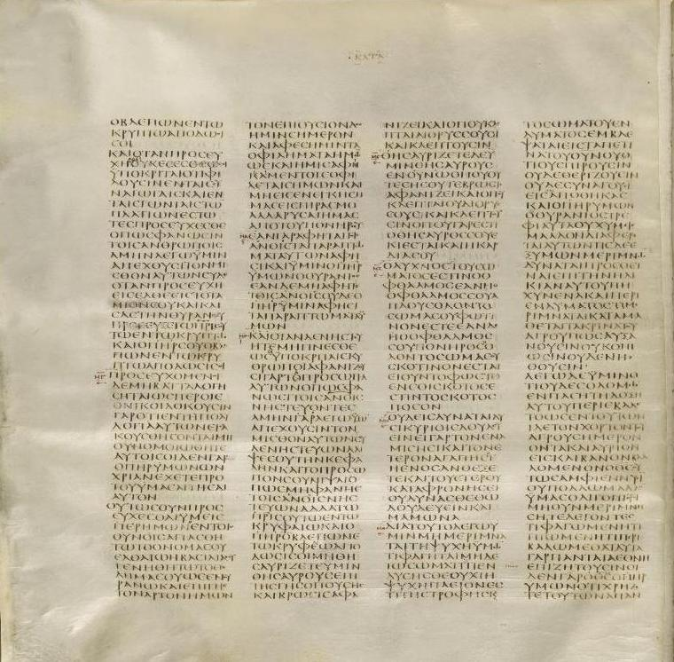

Codex Sinaiticus

The oldest complete New Testament in existence, written in Greek on parchment in the fourth century, found by Constantin von Tischendorf at St. Catherine's Monastery — some leaves in a basket awaiting burning, the rest obtained in 1859. It contains the whole New Testament and much of the Greek Old Testament, with the books in an ancient order.
Biblical Significance
Every modern Bible is translated from manuscripts like this one. Sinaiticus lets scholars check our New Testaments against a copy made within three centuries of the apostles — and find them remarkably faithful. The word that was first preached in houses and marketplaces was already being guarded, copied, and bound as a book.
Interpretations
Scholars agree Sinaiticus is a genuine fourth-century Bible; debate concerns its place of production (Caesarea is often suggested) and the history of its leaves.